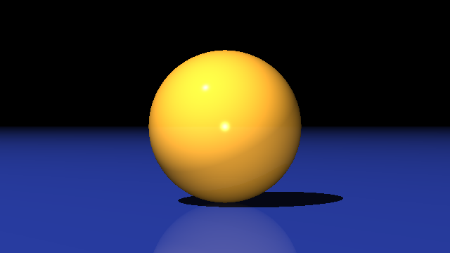
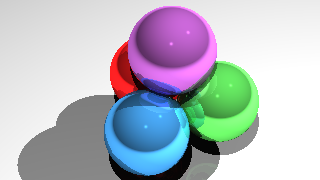

\(\newcommand{\A}{\mat{A}}\)
\(\newcommand{\B}{\mat{B}}\)
\(\newcommand{\C}{\mat{C}}\)
\(\newcommand{\D}{\mat{D}}\)
\(\newcommand{\E}{\mat{E}}\)
\(\newcommand{\F}{\mat{F}}\)
\(\newcommand{\G}{\mat{G}}\)
\(\newcommand{\H}{\mat{H}}\)
\(\newcommand{\I}{\mat{I}}\)
\(\newcommand{\J}{\mat{J}}\)
\(\newcommand{\K}{\mat{K}}\)
\(\newcommand{\L}{\mat{L}}\)
\(\newcommand{\M}{\mat{M}}\)
\(\newcommand{\N}{\mat{N}}\)
\(\newcommand{\One}{\mathbf{1}}\)
\(\newcommand{\P}{\mat{P}}\)
\(\newcommand{\Q}{\mat{Q}}\)
\(\newcommand{\Rot}{\mat{R}}\)
\(\newcommand{\R}{\mathbb{R}}\)
\(\newcommand{\S}{\mathcal{S}}\)
\(\newcommand{\T}{\mat{T}}\)
\(\newcommand{\U}{\mat{U}}\)
\(\newcommand{\V}{\mat{V}}\)
\(\newcommand{\W}{\mat{W}}\)
\(\newcommand{\X}{\mat{X}}\)
\(\newcommand{\Y}{\mat{Y}}\)
\(\newcommand{\argmax}{\mathop{\text{argmax}}}\)
\(\newcommand{\argmin}{\mathop{\text{argmin}}}\)
\(\newcommand{\a}{\vec{a}}\)
\(\newcommand{\b}{\vec{b}}\)
\(\newcommand{\c}{\vec{c}}\)
\(\newcommand{\d}{\vec{d}}\)
\(\newcommand{\e}{\vec{e}}\)
\(\newcommand{\f}{\vec{f}}\)
\(\newcommand{\g}{\vec{g}}\)
\(\newcommand{\mat}[1]{\mathbf{#1}}\)
\(\newcommand{\min}{\mathop{\text{min}}}\)
\(\newcommand{\m}{\vec{m}}\)
\(\newcommand{\n}{\vec{n}}\)
\(\newcommand{\p}{\vec{p}}\)
\(\newcommand{\q}{\vec{q}}\)
\(\newcommand{\r}{\vec{r}}\)
\(\newcommand{\transpose}{{\mathsf T}}\)
\(\newcommand{\tr}[1]{\mathop{\text{tr}}{\left(#1\right)}}\)
\(\newcommand{\s}{\vec{s}}\)
\(\newcommand{\t}{\vec{t}}\)
\(\newcommand{\u}{\vec{u}}\)
\(\newcommand{\vec}[1]{\mathbf{#1}}\)
\(\newcommand{\x}{\vec{x}}\)
\(\newcommand{\y}{\vec{y}}\)
\(\newcommand{\z}{\vec{z}}\)
\(\newcommand{\0}{\vec{0}}\)
\(\renewcommand{\v}{\vec{v}}\)
\(\renewcommand{\hat}[1]{\widehat{#1}}\)
Computer Graphics – Ray Tracing
To get started: Clone this repository using
git clone http://github.com/alecjacobson/computer-graphics-ray-tracing.git
Background
Read Sections 4.5–4.9 of Fundamentals of Computer Graphics (4th Edition).
Many of the classes and functions of this assignment are borrowed or adapted
from the previous ray casting assignment.
Unlike that assignment, this ray
tracer will produce
approximately accurate renderings of scenes illuminated with light.
Ultimately, the shading and lighting models here are useful hacks. The basic
recursive
structure of the program is core to many methods for rendering with global
illumination effects (e.g.,
shadows, reflections, etc.).

Running ./raytracing should produce this image.
Floating point numbers
For this assignment we will use the Eigen::Vector3d to represent points and
vectors, but also RGB colors. For all computation (before finally writing the
.ppm file) we will use double precision floating point numbers and 0 will
represent no light and 1 will represent the brightest color we can display.
Floating point
numbers \(≠\) real
numbers, they don’t even cover all
of the rational numbers. This
creates a number of challenges in numerical method and rendering is not immune
to them. We see this in the need for a fudge
factor to discard ray-intersections
when computing shadows or reflections that are too close to the originating
surface (i.e., false intersections due to numerical error).
Question: If we build a ray and a plane with floating point coefficients,
will the intersection point have floating point coefficients? What if we
consider rational coefficients? What if we consider a sphere instead of a
plane?
Hint: Can we exactly represent \(1/3\) as a double? Can we represent
\(\sqrt{2}\) as a rational?
Dynamic Range & Burning
Light obeys the superposition
principle. Simply put,
the light reflected of some part of an objects is the sum of contributions
from light coming in all directions (e.g., from all light sources). If there are
many bright lights in the scene and the object has a bright color, it is easy
for this sum to add up to more than one. At first this seems counter-intuitive:
How can we exceed 100% light? But this premise is false, the \(1.0\) does not mean
the physically brightest possible light in the world, but rather the brightest
light our screen can display (or the brightest color we can store in our chosen
image format). High dynamic range (HDR)
images store a larger
range beyond this usual [0,1]. For this assignment, we will simply clamp the
total light values at a pixel to 1.
This issue is compounded by the problem that the Blinn-Phong
shading does not
correctly conserve energy
as happens with light in the physical world.
Running ./raytracing ../data/bunny.json should produce this image.
Notice the “burned out” white
regions where the collected light has been clamped to [1,1,1]
(white).
Question: Can we ever get a pixel value less than zero?
Hint: Can a light be more than off?
Side note: This doesn’t stop crafty visual effects artists from using
“negative lights” to manipulate scenes for aesthetic purposes.
Whitelist
There are many ways to “multiply” two vectors. One way is to compute the
component-wise
multiplication: \(\mathbf{c} = \mathbf{a} \circ \mathbf{b}\) or in index notation:
\(c_i = a_i b_i\). That is, multiply each corresponding component and store the
result in the corresponding component of the output vector. Using the Eigen
library this is accomplished by telling Eigen to treat each of the vectors as
“array” (where matrix multiplication, dot product, cross product
would not make sense) and then using the usual * multiplication:
Eigen::Vector3d a,b;
...
// Component-wise multiplication
Eigen::Vector3d c = (a.array() * b.array()).matrix();
The .matrix() converts the “array” view of the vector back to a “matrix”
(i.e., vector) view of the vector.
Eigen also has a built in way to normalize a vector (divide a vector by its
length): a.normalized().
C++ standard library includes a value for \(∞\) via #include <limits>. For
example, for double floating point, use std::numeric_limits<double>::infinity().
Tasks
src/Plane.cpp,
src/Sphere.cpp,
src/Triangle.cpp,
src/TriangleSoup.cpp,
src/first_hit.cpp,
src/viewing_ray.cpp,
src/write_ppm.cpp
See the previous ray casting
assignment.
PointLight::direction in src/PointLight.cpp
Compute the direction to a point light source and its parametric distance from
a query point.
DirectionalLight::direction in src/DirectionalLight.cpp
Compute the direction to a direction light source and its parametric distance from a
query point (infinity).
src/raycolor.cpp
Make use of first_hit.cpp to shoot a ray into the scene, collect hit
information and use this to return a color value.
src/blinn_phong_shading.cpp
Compute the lit color of a hit object in the scene using Blinn-Phong shading
model. This function
should also shoot an additional ray to each light source to check for shadows.
It is recommended to add and debug each term in your shading model. The
ambient term will look like a faint object-ID image. The diffuse term will
illuminate the scene, and create a dull, Lambertian look to each object. The
specular term will add shiny highlights. Then, mask the diffuse and specular
terms by checking for shadows. Finally, add a recursive call to account for
mirror reflections.
src/reflect.cpp
Given an “incoming” vector and a normal vector, compute the mirror reflected
“outgoing” vector.

./raytracing ../data/sphere-packing.json should produce this
image of highly reflective, metallic looking
surfaces.
src/creative.json
Be creative! Design a scene using any of the available Object types (spheres,
planes, triangles, triangle soups), Light types (directional, point), Material
parameters, colors (materials and/or lights), and don’t forget about the camera
parameters.
The .json format is rather
straightforward. But you may find this validator useful.
HW2 Solution
If you don’t trust your solutiosn to the files from HW2:
src/Plane.cpp
src/Sphere.cpp
src/Triangle.cpp
src/TriangleSoup.cpp
src/first_hit.cpp
src/viewing_ray.cpp
src/write_ppm.cpp
You can use precompiled binaries (provided for mac and linux for now) using a
the cmake command:
mkdir build
cd build
cmake -DCMAKE_BUILD_TYPE=Debug -DHW2LIB_DIR=../lib/debug/linux/ ..
make
This will use the library at ../lib/debug/linux/libhw2.a instead of
compiling the above files in src/.
Pro Tip: After you’re confident that your program is working correctly,
you can dramatic improve the performance simply by enabling compiler
optimization:
mkdir build-release
cd build-release
cmake ../ -DCMAKE_BUILD_TYPE=Release
make